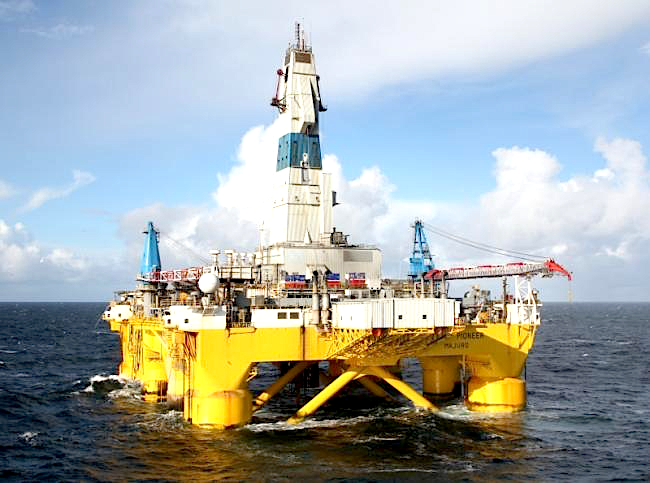

Sobre a FENIX 2002
Fundada em 2002, a fenix 2002 trabalha diretamente em projetos de pesquisa e desenvolvimneto na area de oleo e gas, principalemte na exeploração de aguas profundas, durante esses anos, a Fenix teve varios clientes, entre eles o laboratorio de tecnologia submaria da COPPE, Petobras e Total Automação.
